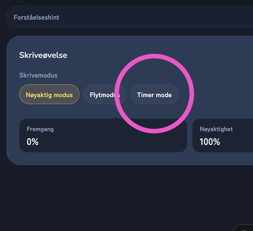
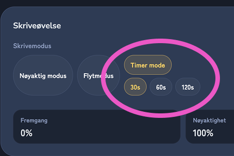
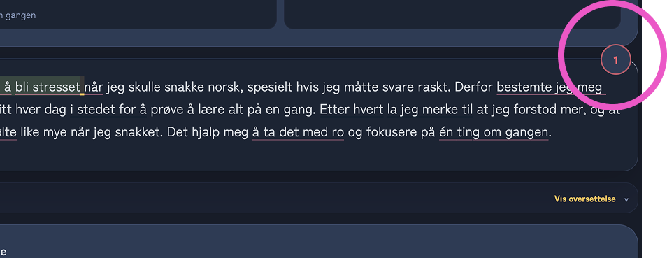
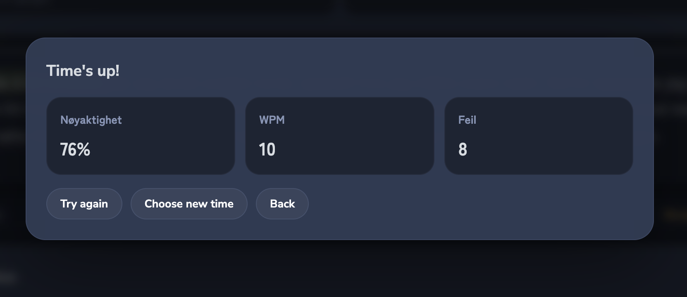

Øv på skriving med tidsbegrensning.
Velg Timer mode under Typing mode.

Velg mellom 30s, 60s eller 120s.

Begynn å skrive. Nedtellingen vises øverst til høyre.

Når tiden er ute vises WPM, nøyaktighet og antall feil.
